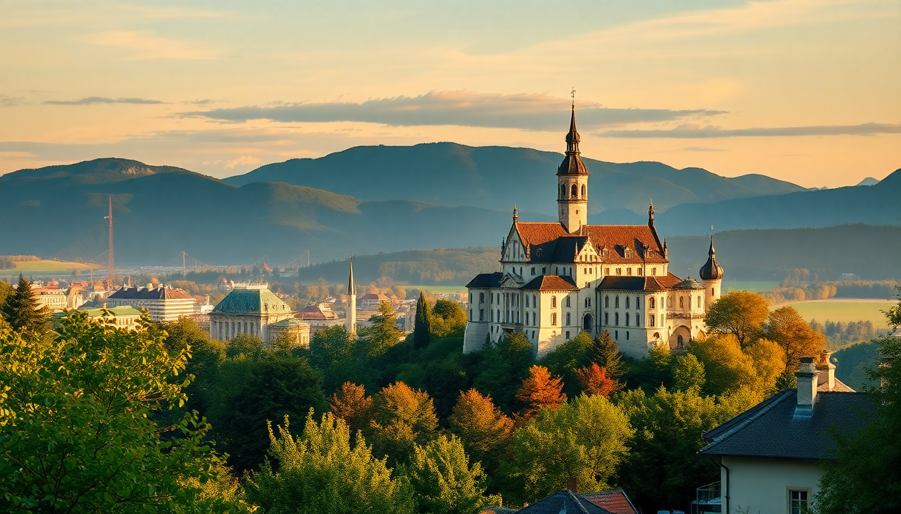

Best Day Trips from Munich: Castles, Salzburg & History

I’ve done all three of these day trips from Munich more than once, and each one requires a different strategy. Neuschwanstein is crowded but worth the hassle if you plan ahead. Salzburg feels like a different country (because it is) and works best as a relaxed train ride. Dachau is sobering, free to enter, and demands a full morning. Here’s exactly how to do each one without wasting time or money.
How do you get to Neuschwanstein Castle from Munich?
Take the regional train from Munich Hauptbahnhof to Füssen. It runs every two hours and takes about two hours. From Füssen station, hop on bus 73 or 78 up to the village of Hohenschwangau. Do not drive unless you want to fight for parking at P4 or P1 lots — they fill up by 10 AM in summer.
Once at the ticket center, you need a timed entry slot. I book mine online at least a week ahead through the official Hohenschwangau ticket portal. Without a reservation, you’ll wait 90 minutes in line and might not get in at all. The tour itself is 35 minutes and moves fast.
- Neuschwanstein Castle — the famous Disney inspiration, but the interior is less fairy-tale than you’d expect. The Marienbrücke bridge gives the postcard view.
- Hohenschwangau Castle — the yellow castle next door. Less crowded, and I actually preferred Ludwig’s childhood home for its lived-in feel.
- Alpsee lake — a 15-minute walk from the ticket center. Free, quiet, and good for a leg stretch before the train back.
- Müller’s restaurant in Hohenschwangau — overpriced but convenient. Skip the schnitzel; grab a pretzel and beer instead.
The return train from Füssen to Munich leaves roughly every two hours. Miss it, and you’re stuck waiting. I always set an alarm for 30 minutes before departure.
Is Salzburg worth the trip from Munich?
Yes, but only if you go on a weekday. Weekend trains are packed with tourists and locals alike. The direct EuroCity train from Munich Hauptbahnhof to Salzburg Hauptbahnhof takes 90 minutes. No changes, no hassle. You can also take the cheaper regional train (RE5), which adds 30 minutes but costs half as much.
Salzburg’s old town is compact. Walk from the station to Mirabell Palace (10 minutes), then cross the Salzach River over the Staatsbrücke bridge. The fortress dominates the skyline — you can hike up or take the Festungsbahn funicular. I hike up and take the funicular down.
- Mirabell Gardens — free, famous from The Sound of Music, and genuinely pretty in spring.
- Getreidegasse — the main shopping street. Mozart’s birthplace is here (house number 9). The crowd is thick; brace yourself.
- Festung Hohensalzburg — the fortress. The panoramic view over the city and Alps is the real payoff. Entry is €12.
- Café Tomaselli on Alter Markt — old-school coffee house since 1705. Order a Melange and an apple strudel. Cash only.
For lunch, skip the tourist traps on Getreidegasse. Walk five minutes to St. Peter Stiftskeller — it’s been serving food since 803 AD. The schnitzel is good, the beer garden is shaded, and it’s not as expensive as the location suggests.
What should you know before visiting Dachau Memorial Site?
Dachau is not a tourist attraction. It is a memorial and museum on the grounds of the first Nazi concentration camp. Entry is free, but the audio guide costs €4 and is worth every cent. The memorial is open daily from 9 AM to 5 PM. Arrive early — the site gets busy with school groups by 10:30.
Take the S-Bahn S2 from Munich Hauptbahnhof to Dachau station (20 minutes). Then catch bus 726 to the memorial gate. The bus runs every 20 minutes. Do not take a taxi — it’s a waste of money.
- The Jourhaus — the main entrance gate with the infamous “Arbeit macht frei” inscription. You’ll pass through it as you enter.
- The museum — housed in the former maintenance building. The exhibits are thorough and brutal. Plan at least 90 minutes here.
- The bunker — the camp prison. Quiet, cold, and the most haunting part of the site.
- The reconstructed barracks — only two remain. The scale of the camp becomes real when you see how many stood here originally.
I spent three hours here and felt it was enough. There is no restaurant on site — only a small café with snacks. Eat a proper breakfast before you go.
Can you combine two day trips in one day?
I tried. I don’t recommend it. Salzburg plus Neuschwanstein in one day means waking up at 5 AM and returning at 10 PM. You’ll spend more time on trains and buses than actually seeing anything. Dachau plus anything else in the same day feels disrespectful to the memorial’s purpose.
If you have only one day, pick one trip. If you have two days, do Salzburg and Neuschwanstein on separate days. Dachau can be done on a half-day and paired with a relaxed afternoon in Munich — maybe a walk through the Englischer Garten or a beer at Augustiner-Keller near the Hauptbahnhof.
When is the best time to do these day trips?
May through September gives you the best weather and longest daylight hours. Neuschwanstein is miserable in rain — the Marienbrücke bridge gets slippery and the castle interior is dim. Salzburg is beautiful in any season but Christmas markets (late November to December) add a festive layer. Dachau is fine year-round; the museum is indoors.
Avoid August if you hate crowds. Neuschwanstein sees 6,000 visitors a day in peak summer. Go in late September or early October instead. The Alps are still green, the crowds thin out, and the light is golden.
FAQ
Do I need to buy tickets in advance for Neuschwanstein Castle? Yes. Book online through the official Hohenschwangau ticket portal at least 3–7 days ahead. You select a 30-minute entry window. Without a reservation, you’ll queue for 90 minutes and risk missing your slot entirely. The ticket costs €18 for adults.
Is Salzburg doable without a car? Absolutely. The direct train from Munich Hauptbahnhof to Salzburg Hauptbahnhof is easy, reliable, and runs hourly. Once in Salzburg, everything in the old town is walkable. The Salzburg Card (€30 for 24 hours) covers the fortress, funicular, and public buses — I’ve used it and it paid for itself by midday.
How long should I spend at Dachau Memorial Site? Plan for 3 to 4 hours minimum. The museum alone takes 90 minutes. Walking the grounds, seeing the barracks, and visiting the bunker adds another hour. The site closes at 5 PM, so arrive by 11 AM at the latest. The audio guide is essential — it adds context that the exhibits don’t fully explain.
Conclusion
- Book Neuschwanstein tickets online at least a week ahead. Take the regional train to Füssen, then bus 73. Skip the castle interior if queues are long; the view from Marienbrücke is the real draw.
- Salzburg is a smooth 90-minute train ride from Munich. Walk the old town, hike to the fortress, and eat at St. Peter Stiftskeller. Weekdays are better.
- Dachau is free, sobering, and requires a full morning. Take the S-Bahn S2 and bus 726. The audio guide is worth the €4.
- Don’t try to combine two day trips in one day. Pick one and do it right.
- Late September is the sweet spot for all three — good weather, fewer crowds, and no summer chaos.